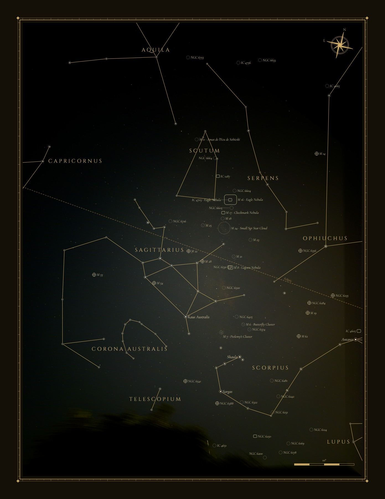
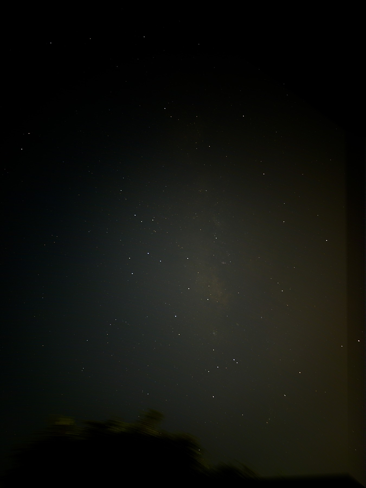
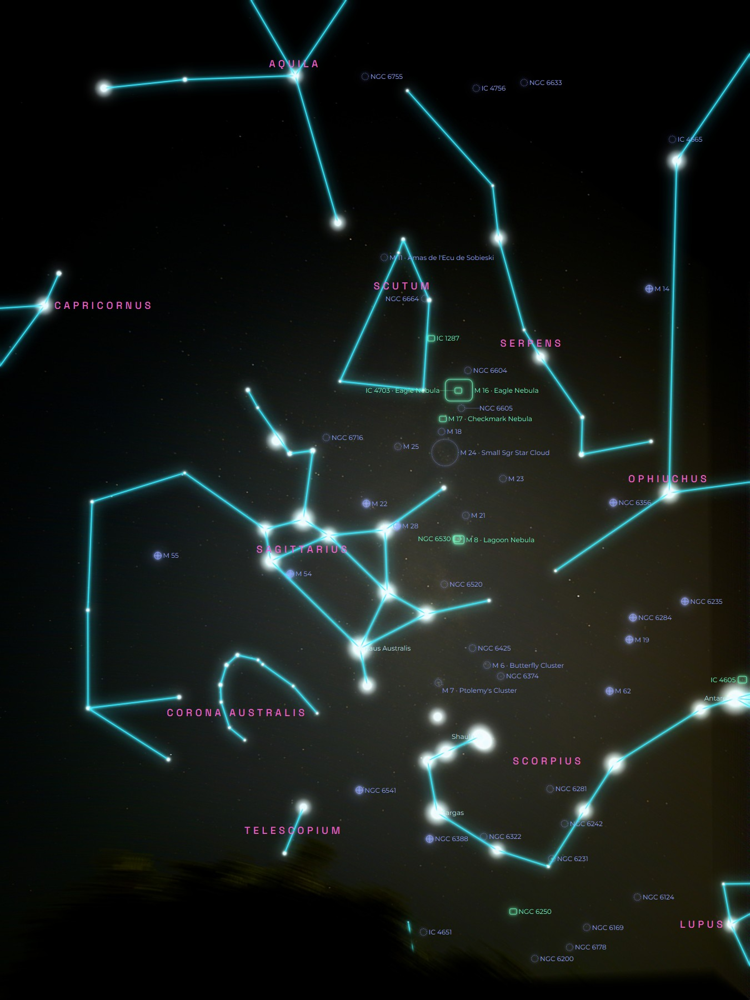
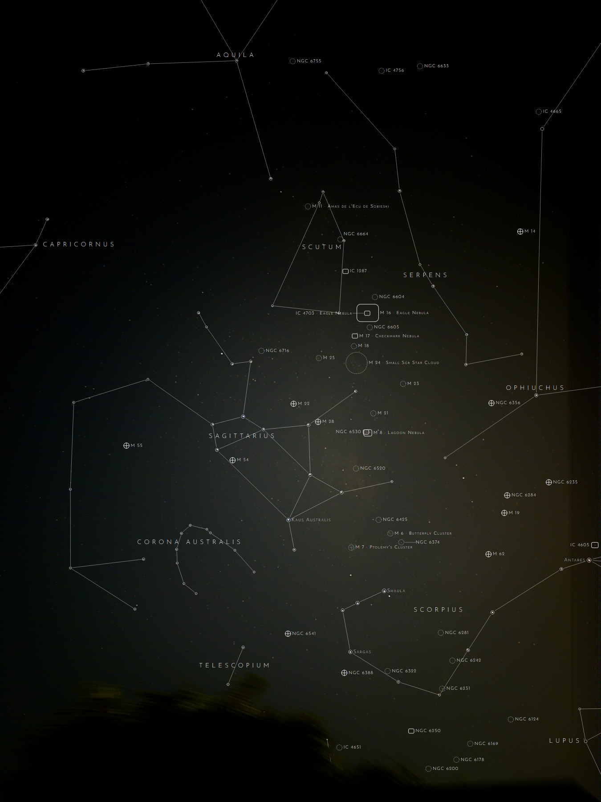
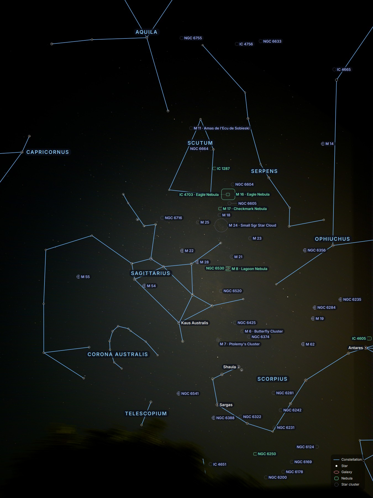

Drop in a night-sky photo. StarGuide recognises the stars offline and turns your picture into annotated constellation artwork you can print, share or keep. Free for Windows.
Download freeSee the stylesWorks without internet. Your photos never leave your computer.


Your photoStarGuideDrag to compare. Phone photo of Sagittarius and Scorpius.
Same stars, different mood. Eight ready-made styles, all adjustable.



Built for people who photograph the night sky, from a phone to a tracked camera.
Offline plate solving finds exactly where your camera was pointing. No upload, no account.
Constellations, bright stars, Messier and NGC objects, planets, the Moon and more, placed so labels do not collide.
Eight art styles and full control over colours, fonts, lines and frames.
Optional clean-up, stretch, colour calibration and detail tools. Your photo stays as shot unless you choose otherwise.
Combine exposures for cleaner results, or process a whole folder in one go.
PNG, JPG, 16-bit TIFF, SVG, print-ready PDF, or layered files for your editor.
Free. Windows 10 / 11, 64-bit.
Download for WindowsUnzip the folder anywhere and run StarGuide.exe. About 430 MB.
Mac and Linux versions are planned.
StarGuide is a new independent app and is not code-signed yet, so Windows SmartScreen shows a warning. Click More info, then Run anyway.
No. Star recognition, catalogues and rendering all run on your computer. Only optional extras (online solving, satellite data, update check) use the internet, and only when you switch them on.
JPG, PNG, TIFF, HEIC and most camera RAW files, from phone shots to wide-field astrophotos.
Yes. This version is free to use and keep. Future versions may add paid editions, but the copy you download stays yours.